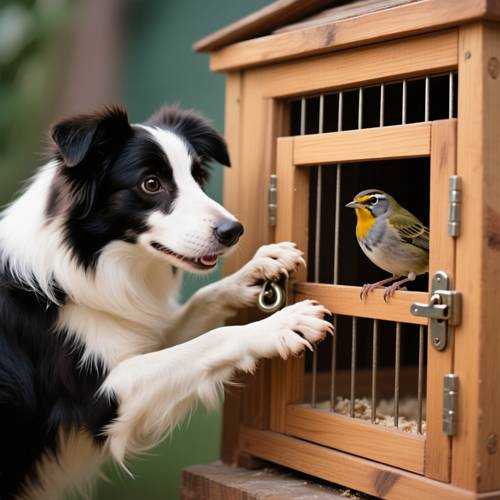
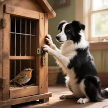
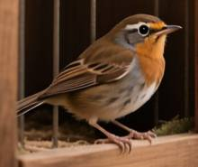
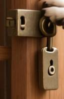
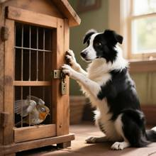
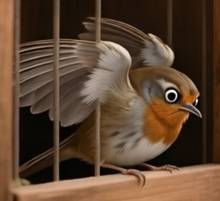

Attribute — Generated image: A clever border collie is trying to use its paws to o
Generated image: A clever border collie is trying to use its paws to open the latch of a wooden cage with a scared bird in it.

Direct — one call, no iterationContinuum — Qwen3.8-27B + Qwen-Image
Judge — Direct
PASSAttribute - Material — The image shows a cage that is made of light-colored wood, with visible wood grain.
PASSAction - Full-body (Character/Anthropomorphic) — The image depicts a black and white border collie with its front paws raised and placed on the door of a cage, appearing to be interacting with it.
FAILAction - Contact Interaction — The border collie has its paw on a metal ring on the cage door, but it is not in contact with the slide-bolt latch mechanism located to the right.
PASSRelationship - Inclusion — A small bird with a yellow throat is perched inside the wooden cage, behind the bars of the door.
Judge — Continuum
PASSAttribute - Material — The image displays a cage constructed primarily from a material with a light brown color and visible grain, which is consistent with the appearance of wood.
PASSAction - Full-body (Character/Anthropomorphic) — A black and white border collie is shown in a posture where it is sitting on its hind legs while its upper body is raised, and its front paws are placed on the cage door, indicating an action directed towards the latch.
PASSAction - Contact Interaction — The border collie's front paws are physically touching the wooden door of the cage, specifically around the metal latch mechanism.
PASSRelationship - Inclusion — A small bird with brown, white, and orange-red plumage is located inside the cage, positioned behind its vertical bars.
What the agent did
Thinking
Let me generate this image: "A clever border collie trying to use its front paws to open the latch of a wooden cage. A frightened bird is inside." Main elements: 1. Border collie — clever, focused expression 2. Using its front paws to open the latch of a wooden cage 3. Frightened bird inside the cage 4. Wooden cage (not metal) Let me create a detailed prompt for qwen-image. The image size is probably fixed (default 1024x1024). Let me generate it. Prompt: "A clever border collie with black and white fur sitting on its hind legs, standing with its front paws raised, opening the latch of a wooden birdcage with its front paws, a frightened small bird cowering inside the wooden cage, warm indoor lighting, soft natural light, detailed fur, storytelling scene, photorealistic style." Let me be careful with the details — the dog should be using its front paws to open the latch. The cage is made of wood. The bird is frightened. I'll generate at 1024x1024 (default).
Step 1 — `generate_image`
{
"model": "qwen-image",
"prompt": "Photorealistic storybook scene: a clever black-and-white border collie sitting upright on its hind legs, both front paws raised and pressing against the wooden latch of a rustic wooden bird cage, focused determined expression with intelligent eyes. Inside the cage, a small frightened brown songbird cowers in the corner, feathers ruffled, eyes wide with fear, wings slightly raised. The wooden cage has a visible small latch mechanism on the door that the dog is working with its paws. Warm cozy indoor light, soft sunlight from a nearby window, natural wood grain texture on the cage, detailed realistic dog fur, shallow depth of field, high detail, cinematic lighting."
}
Result img_0

Thinking
The image is quite well done. Let me verify: 1. Border collie ✓ — black and white, looks like a collie 2. Using front paws to open the latch ✓ — both front paws are placed on the latch of the wooden cage 3. Frightened bird inside the cage — there is a bird (looks like a robin), but is it frightened? It's standing on the floor of the cage, and looks relatively calm, but it's hard to tell. Its posture is somewhat upright, and the expression is hard to read. I'll zoom in on the bird and the latch to check the details. Let me look more closely at the bird and the latch area.
Step 2 — `inspect_region`
{
"image": "img_0",
"roi": "the bird inside the cage",
"padding": 0.1
}
Result img_1

Step 3 — `inspect_region`
{
"image": "img_0",
"roi": "the latch where the dog's paws are",
"padding": 0.1
}
Result img_2

Thinking
Let me evaluate this: 1. Border collie ✓ — black and white, looks like a collie, has a smart-looking expression 2. Using front paws on the latch ✓ — both front paws are touching the latch/lock area 3. Wooden cage ✓ — wooden cage with vertical metal bars (no problem) 4. Frightened bird — this bird (a robin) looks fairly calm, standing on the floor of the cage. Its expression is neutral to alert, not clearly frightened. It's not cowering or ruffled. Also, the latch is a metal padlock-style mechanism, which is a bit unusual for a "wooden cage," but the cage itself is wooden, so it's acceptable. The dog's paws are on the latch — good. The bird's fear is the weakest element. The prompt says "a frightened bird inside." The bird is looking somewhat alert, but not clearly frightened. Let me try editing to make the bird look more frightened: feathers ruffled, cowering in a corner, eyes wide, or flinching. Let me try edit_image with a targeted instruction to make the bird look frightened.
Model
The dog, latch, and wooden cage are great, but the bird looks calm rather than scared. Let me fix that.
Step 4 — `edit_image`
{
"model": "qwen-image",
"image": "img_0",
"prompt": "Make the small bird inside the cage look visibly scared: cowering low in the far corner of the cage, body hunched, feathers puffed and ruffled, eyes wide, head lowered and turning away, wings slightly bristled with fear. Keep everything else in the image exactly the same."
}
Result img_3

Thinking
In the new image, the bird is now cowering in the corner, feathers puffed up, wings slightly raised, with wide eyes—it looks visibly frightened. The dog, cage, and latch are all preserved. Let me zoom in on the bird to check.
Step 5 — `inspect_region`
{
"image": "img_3",
"padding": 0.1,
"roi": "the bird inside the cage"
}
Result img_4

Thinking
The bird is now clearly frightened — wide open eyes, wings flared/raised in a defensive, frightened posture, feathers bristled. It's tucked into the corner of the cage, hunched low. All the elements are present: 1. ✅ Border Collie (black and white, clever/determined expression) 2. ✅ Using both front paws to open the latch of a wooden cage 3. ✅ A frightened bird inside the cage (wide eyes, wings flared, cowering) 4. ✅ Wooden cage This is a good result. Let's mark img_3 as the best and finish up.
Model
The bird now reads clearly as frightened — wide eye, flared defensive wings, bristled feathers, hunched low in the corner. All the requested elements are present: the black-and-white border collie with a determined, clever expression, both front paws working the latch, the wooden cage, and the scared bird inside.
Step 6 — `mark_best`
{
"image": "img_3",
"reason": "All prompt elements present: clever border collie pressing its paws on the wooden cage latch, and the bird inside visibly scared (wide eyes, flared wings, cowering). Composition and lighting are clean."
}
Thinking
The marked image is img_3, which is also my final version. Complete — all elements of the prompt are present: 1. A clever border collie ✓ 2. Using its front paws to open the latch ✓ 3. A wooden cage ✓ 4. A frightened bird inside ✓ Time to stop and summarize.
Model
Done. The final image (img_3) matches the description: - **Clever border collie** — black-and-white, sitting upright with a focused, intelligent expression, both front paws pressed against the latch of the cage door. - **Wooden cage** — rustic wooden birdhouse-style cage with a metal latch mechanism the dog is working with its paws. - **Scared bird** — a small robin cowered in the corner, eyes wide, wings flared in a frightened defensive posture, feathers bristled. The image is marked as best and ready.